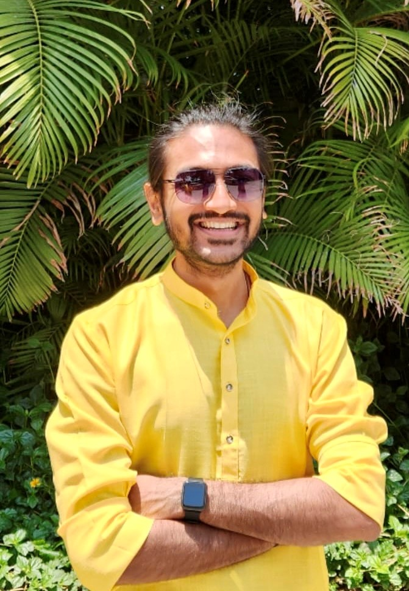

I am a first-year Master's student in Electrical and Computer Engineering at the University of Texas at Austin, focusing on Computer Systems for
AI and Machine Learning. I am currently working as a research assistant with Dr. Poulami Das, where I am working on
improving the inter-token generation latency during LLM inferencing by tuning KV cache size using predictive ML methods.
Prior to this, I worked as an Applied ML Architect at NVIDIA, Bengaluru, working on GPU Architecture optimization,
where I built ML-powered predictive models to project performance for NVIDIA's future products. I also helped build analytical models to debug inefficient parts
in the current architecture, particularly for NVIDIA's gaming market products (e.g DLSS)
I also worked as a research assistant at H2Lab, University of Washington under
Prithviraj Ammanabrolu, where I am working on deriving rewards from freeform linguistic feedback to train Large Language Models using RL.
My research interests lie in efficient designs of computer architecture for running massive AI models. To this end, I am interested in using statistical methods,
Reinforcement Learning and other optimization algorithms to design efficient systems. I am also keenly interested in NLP, particularly Large Language Models, RLHF, and
interactive systems.
I graduated from IIT Kharagpur in 2021 with a major in Electronics and Elec. Comm. and a minor in Computer Science. My bachelor thesis was on Training Generative Dialog Models using Reinforcement Learning with Learned Reward Systems, supervised by Dr. Pawan Goyal.
My hobbies include trekking, calisthenics, cooking (North Indian cuisines), and playing guitar. I also love reading scientific blogs related to astronomy and physiology.